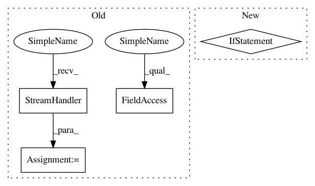

e52f05712b15fa8f47f8951d39722f07a197d125,hpolib/container/client_abstract_benchmark.py,,,#,36
Before Change
import hpolib.config
console = logging.StreamHandler()
console.setLevel(logging.DEBUG)
root = logging.getLogger()
root.setLevel(level=logging.INFO)
logger = logging.getLogger("BenchmarkClient")
logger.setLevel(level=logging.INFO)
class AbstractBenchmarkClient(metaclass=abc.ABCMeta):
After Change
// Read in the verbosity level from the environment variable HPOLIB_DEBUG
log_level_str = os.environ.get("HPOLIB_DEBUG", "false")
log_level = logging.DEBUG if log_level_str == "true" else logging.INFO
root = logging.getLogger()
root.setLevel(level=log_level)
In pattern: SUPERPATTERN
Frequency: 3
Non-data size: 4
Instances
Project Name: automl/HPOlib2
Commit Name: e52f05712b15fa8f47f8951d39722f07a197d125
Time: 2020-08-10
Author: muller-phil@gmx.net
File Name: hpolib/container/client_abstract_benchmark.py
Class Name:
Method Name:
Project Name: dask/dask-ml
Commit Name: a770dbd27f41d90205bf69d2cd86991d6f887e90
Time: 2020-05-28
Author: stsievert@users.noreply.github.com
File Name: dask_ml/model_selection/_incremental.py
Class Name: BaseIncrementalSearchCV
Method Name: fit
Project Name: Qiskit/qiskit-aqua
Commit Name: 23e13f3213f6ffc0146ede1b6e448632eafa7919
Time: 2019-02-02
Author: simone.perriello@protonmail.com
File Name: test/test_mc_mt_gate.py
Class Name:
Method Name: